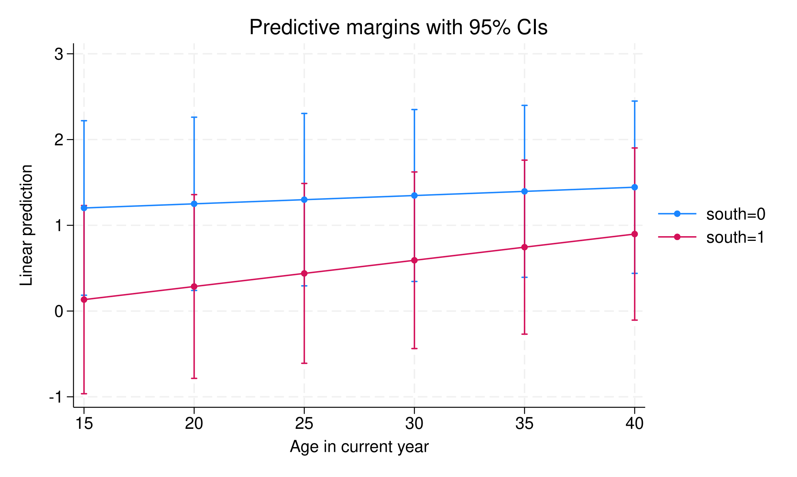

Stata’s margins command computes predicted means and marginal effects, but care is needed when fixed effects are present. In a linear model the issue is benign: demeaning and dummy-variable approaches return the same coefficients and the same marginal effects.
We check that on the auto data, treating the 5-category repair record rep78 as the panel identifier and regressing price on mpg interacted with trunk — once with xtreg, fe (within-demeaning) and once with reg plus i.rep78 dummies.
. clear
. sysuse auto
(1978 automobile data)
. xtset rep78
Panel variable: rep78 (unbalanced)
. xtreg price c.mpg##c.trunk, fe
Fixed-effects (within) regression Number of obs = 69
Group variable: rep78 Number of groups = 5
R-squared: Obs per group:
Within = 0.2570 min = 2
Between = 0.0653 avg = 13.8
Overall = 0.2237 max = 30
F(3, 61) = 7.03
corr(u_i, Xb) = -0.4133 Prob > F = 0.0004
------------------------------------------------------------------------------
price | Coefficient Std. err. t P>|t| [95% conf. interval]
-------------+----------------------------------------------------------------
mpg | -98.12003 226.8708 -0.43 0.667 -551.7763 355.5362
trunk | 295.0544 343.3934 0.86 0.394 -391.6032 981.712
|
c.mpg#|
c.trunk | -12.23318 15.94713 -0.77 0.446 -44.12143 19.65506
|
_cons | 7574.85 5321.325 1.42 0.160 -3065.797 18215.5
-------------+----------------------------------------------------------------
sigma_u | 992.2156
sigma_e | 2631.2869
rho | .12449059 (fraction of variance due to u_i)
------------------------------------------------------------------------------
F test that all u_i=0: F(4, 61) = 0.86 Prob > F = 0.4948
. margins , dydx(mpg)
Average marginal effects Number of obs = 69
Model VCE: Conventional
Expression: Linear prediction, predict()
dy/dx wrt: mpg
------------------------------------------------------------------------------
| Delta-method
| dy/dx std. err. z P>|z| [95% conf. interval]
-------------+----------------------------------------------------------------
mpg | -268.4981 74.12513 -3.62 0.000 -413.7807 -123.2156
------------------------------------------------------------------------------
. reg price c.mpg##c.trunk i.rep78
Source | SS df MS Number of obs = 69
-------------+---------------------------------- F(7, 61) = 3.19
Model | 154453046 7 22064720.8 Prob > F = 0.0061
Residual | 422343913 61 6923670.71 R-squared = 0.2678
-------------+---------------------------------- Adj R-squared = 0.1838
Total | 576796959 68 8482308.22 Root MSE = 2631.3
------------------------------------------------------------------------------
price | Coefficient Std. err. t P>|t| [95% conf. interval]
-------------+----------------------------------------------------------------
mpg | -98.12003 226.8708 -0.43 0.667 -551.7763 355.5362
trunk | 295.0544 343.3934 0.86 0.394 -391.6032 981.712
|
c.mpg#|
c.trunk | -12.23318 15.94713 -0.77 0.446 -44.12143 19.65506
|
rep78 |
2 | 438.0002 2161.922 0.20 0.840 -3885.031 4761.031
3 | 987.1363 2022.606 0.49 0.627 -3057.315 5031.587
4 | 1240.944 2046.417 0.61 0.547 -2851.12 5333.008
5 | 2605.83 2161.837 1.21 0.233 -1717.031 6928.691
|
_cons | 6355.731 5209.899 1.22 0.227 -4062.105 16773.57
------------------------------------------------------------------------------
. margins , dydx(mpg)
Average marginal effects Number of obs = 69
Model VCE: OLS
Expression: Linear prediction, predict()
dy/dx wrt: mpg
------------------------------------------------------------------------------
| Delta-method
| dy/dx std. err. t P>|t| [95% conf. interval]
-------------+----------------------------------------------------------------
mpg | -268.4981 74.12513 -3.62 0.001 -416.7205 -120.2758
------------------------------------------------------------------------------
.
The two agree exactly. Both give \(-98.12003\) on mpg, 295.0544 on trunk and \(-12.23318\) on the interaction, and both average marginal effects are \(-268.4981\) with a standard error of 74.12513. The only difference is that xtreg reports a \(z\) statistic and reg a \(t\), so the confidence intervals differ in the fourth digit. Nothing here needs care.
5.2 Marginal effects in a non-linear model
In a nonlinear model the two approaches diverge. We now need a genuine panel and a count outcome, so we simulate one: 250 observations, 50 units observed over 5 periods. Within each unit, \(\text{mpg} \sim N(20, 4^2)\) and \(\text{trunk} \sim N(15, 3^2)\) vary period to period, while the unit effect \(\alpha_i \sim N(0,1)\) is drawn once and held fixed. The conditional mean is \(\lambda_{it} = \exp(0.5 + 0.05\,\text{mpg}_{it} - 0.03\,\text{trunk}_{it} + \alpha_i)\) and \(\text{accidents}_{it} \sim \text{Poisson}(\lambda_{it})\). The true coefficients are 0.05 and \(-0.03\).
(We use a simulated count outcome accidents and a proper panel with 50 units of 5 periods each, rather than auto’s continuous price and its 5-category rep78 — a true panel needs many units, and a fixed-effect count model needs an actual count dependent variable.)
In this example, “xtpoisson, fe” and “poisson … i.id” return the same coefficients (both give mpg = .0487946 with a standard error of .0090524). Fixed effect Poisson model (sometimes called conditional fixed effect Poisson) is the same models as a Poisson model with dummies, just like a linear model (OLS with dummies is the same as fixed effect OLS). Poisson model and OLS are unique in this sense that there is no “incidental parameter” problem.
Both recover the truth: 0.0488 against a true 0.05 for mpg, and \(-0.0316\) against \(-0.03\) for trunk. Note the sample sizes differ, 245 against 250 — xtpoisson, fe drops the one group whose outcome is zero in every period, because such a group contributes nothing to the conditional likelihood. It changes neither coefficient here.
The margins calls return different marginal effects even though the models are the same, and the spread is not small:
call
AME of mpg
std. err.
margins, dydx(mpg) after xtpoisson, fe
0.0488
0.0091
margins, dydx(mpg) predict(nu0)
0.0850
0.0341
margins, dydx(mpg) after poisson ... i.id
0.2239
0.0421
Three answers from one coefficient, the largest 4.6 times the smallest. In the conditional fixed-effect Poisson the fixed effects are conditioned out — they are not estimated. The first row is not really a marginal effect at all: with no \(\alpha_i\) to exponentiate against, it returns the coefficient itself. margins, predict(nu0) sets the fixed effect to zero, which is arbitrary, and note that the conditional model has no intercept either — it was swept out with the \(\alpha_i\). So nu0 exponentiates \(X\beta\) alone, giving a baseline count no unit in the data actually has. The Poisson with dummies estimates the fixed effects, so margins uses actual estimates and gets the largest value.
The arithmetic is easy to follow, since for a Poisson \(\partial\lambda/\partial x = \beta\lambda\) and therefore every one of these AMEs is \(\beta\) times an average \(\lambda\). Divide each row by 0.0488 and the implied baselines are 1.00, 1.74 and 4.59. The last matches \(E[\lambda] = e^{1.05}E[e^{\alpha}] = 4.71\) from the DGP; the middle matches \(e^{X\beta}\) evaluated without intercept or fixed effect, 1.65. The three rows differ only in what they assume about \(\alpha_i\), and none of them is a modelling subtlety — it is a choice of baseline. The third is the defensible one, but for the conditional model the safest route is to report the original coefficients and avoid margins for marginal effects entirely.
The conditional logit is worse. The fixed effects are not estimated, and unlike Poisson there is an incidental-parameter problem, so logit with dummies is inconsistent unless the panel is deep (roughly 20+ observations per unit). With conditional logit the predicted probability depends on the unestimated \(\alpha_i\); margins after clogit or xtlogit, fe offers options like pu0 (set all fixed effects to zero), but none is defensible.
Without estimating \(\alpha_i\) there is no way to predict \(P\) in a meaningful way. But the log-odds are linear in the covariates, and the marginal effect of \(x_1\) or \(x_2\) on the log-odds does not involve \(\alpha_i\). So margins with the predict(xb) option — marginal effects on the log-odds scale — is interpretable. Note that xb here is \(X_{it}\beta\) only — the individual fixed effect \(\alpha_i\) is not estimated in conditional logit and so is not part of the prediction. The logged-odds effect of a covariate (\(\partial(X\beta)/\partial x\)) therefore matches the original coefficient exactly and does not depend on \(\alpha_i\), but xb itself is a log-odds relative to each individual’s (unidentified) baseline, not the individual’s absolute log-odds. This lets you make linear extrapolations of relative log-odds across values of the covariates, but not of absolute predicted probabilities, since those would require \(\alpha_i\).
. clear
. webuse union
(NLS Women 14-24 in 1968)
. clogit union c.age##i.south not_smsa grade, group(idcode)
note: multiple positive outcomes within groups encountered.
note: 2,744 groups (14,165 obs) omitted because of all positive or
all negative outcomes.
Iteration 0: Log likelihood = -4518.8815
Iteration 1: Log likelihood = -4512.8224
Iteration 2: Log likelihood = -4512.8192
Iteration 3: Log likelihood = -4512.8192
Conditional (fixed-effects) logistic regression Number of obs = 12,035
LR chi2(5) = 74.73
Prob > chi2 = 0.0000
Log likelihood = -4512.8192 Pseudo R2 = 0.0082
------------------------------------------------------------------------------
union | Coefficient Std. err. z P>|z| [95% conf. interval]
-------------+----------------------------------------------------------------
age | .0096842 .0050265 1.93 0.054 -.0001676 .019536
1.south | -1.382178 .276966 -4.99 0.000 -1.925022 -.8393346
|
south#c.age |
1 | .0208997 .0081247 2.57 0.010 .0049756 .0368238
|
not_smsa | .0195233 .1131292 0.17 0.863 -.2022058 .2412523
grade | .0822276 .0419062 1.96 0.050 .000093 .1643622
------------------------------------------------------------------------------
. margins, at( age=(15 20 25 30 35 40) south=(0 1)) predict(xb)
Predictive margins Number of obs = 12,035
Model VCE: OIM
Expression: Linear prediction, predict(xb)
1._at: age = 15
south = 0
2._at: age = 15
south = 1
3._at: age = 20
south = 0
4._at: age = 20
south = 1
5._at: age = 25
south = 0
6._at: age = 25
south = 1
7._at: age = 30
south = 0
8._at: age = 30
south = 1
9._at: age = 35
south = 0
10._at: age = 35
south = 1
11._at: age = 40
south = 0
12._at: age = 40
south = 1
------------------------------------------------------------------------------
| Delta-method
| Margin std. err. z P>|z| [95% conf. interval]
-------------+----------------------------------------------------------------
_at |
1 | 1.202147 .5190753 2.32 0.021 .184778 2.219516
2 | .133464 .5599015 0.24 0.812 -.9639228 1.230851
3 | 1.250568 .5153257 2.43 0.015 .240548 2.260588
4 | .2863834 .5465398 0.52 0.600 -.7848148 1.357582
5 | 1.298989 .5127819 2.53 0.011 .2939548 2.304023
6 | .4393029 .5349589 0.82 0.412 -.6091973 1.487803
7 | 1.34741 .5114619 2.63 0.008 .3449629 2.349857
8 | .5922223 .5252767 1.13 0.260 -.4373011 1.621746
9 | 1.395831 .5113752 2.73 0.006 .3935538 2.398108
10 | .7451418 .5175997 1.44 0.150 -.2693351 1.759619
11 | 1.444252 .5125224 2.82 0.005 .4397264 2.448777
12 | .8980612 .5120182 1.75 0.079 -.1054761 1.901598
------------------------------------------------------------------------------
. marginsplot
Variables that uniquely identify margins: age south
. graph export "marginsplot-clogit.svg", as(svg) replace
(file marginsplot-clogit.svg not found)
file marginsplot-clogit.svg saved as SVG format

This fits a conditional logit of union status on age, south, and their interaction, on 12,035 person-years from the union panel. The age coefficient is 0.0097 with a standard error of 0.0050, and the south indicator is \(-1.382\) with a standard error of 0.277. margins with predict(xb) then returns predicted log-odds at six ages crossed with south — twelve combinations — but not predicted probabilities, since those require \(\alpha_i\).
Read the vertical axis of that plot as a relative scale. Because \(\alpha_i\) is not estimated, xb is each individual’s log-odds measured from an unidentified baseline, so the level of any single point is arbitrary; what is interpretable is how the curves move across age and how far apart the south and non-south curves sit. Differences within the plot are the estimable quantities, not heights.
Source Code
---title: "Marginal effects in models with fixed effects"date: "2019-01-25"---## Marginal effects in a linear modelStata's `margins` command computes predicted means and marginal effects, but care is needed when fixed effects are present. In a linear model the issue is benign: demeaning and dummy-variable approaches return the same coefficients and the same marginal effects.We check that on the `auto` data, treating the 5-category repair record `rep78`as the panel identifier and regressing `price` on `mpg` interacted with `trunk`— once with `xtreg, fe` (within-demeaning) and once with `reg` plus `i.rep78`dummies.```{r}#| label: stata-chunk#| engine: 'stata'#| engine.path: '/usr/local/bin/stata'#| cache: trueclearsysuse autoxtset rep78xtreg price c.mpg##c.trunk, femargins , dydx(mpg)reg price c.mpg##c.trunk i.rep78margins , dydx(mpg)```The two agree exactly. Both give $-98.12003$ on `mpg`, 295.0544 on `trunk` and$-12.23318$ on the interaction, and both average marginal effects are$-268.4981$ with a standard error of 74.12513. The only difference is that`xtreg` reports a $z$ statistic and `reg` a $t$, so the confidence intervalsdiffer in the fourth digit. Nothing here needs care.## Marginal effects in a non-linear modelIn a nonlinear model the two approaches diverge. We now need a genuine panel anda count outcome, so we simulate one: 250 observations, 50 units observed over 5periods. Within each unit, $\text{mpg} \sim N(20, 4^2)$ and$\text{trunk} \sim N(15, 3^2)$ vary period to period, while the unit effect$\alpha_i \sim N(0,1)$ is drawn once and held fixed. The conditional mean is$\lambda_{it} = \exp(0.5 + 0.05\,\text{mpg}_{it} - 0.03\,\text{trunk}_{it} + \alpha_i)$and $\text{accidents}_{it} \sim \text{Poisson}(\lambda_{it})$. The truecoefficients are 0.05 and $-0.03$.```{r}#| label: stata-chunk2#| engine: 'stata'#| engine.path: '/usr/local/bin/stata'#| cache: trueclearset seed 42set obs 250gen id =ceil(_n/5)bys id: gen t = _ngen mpg =rnormal(20,4)gen trunk =rnormal(15,3)gen alpha =rnormal(0,1)bys id: replace alpha = alpha[1]gen lambda =exp(0.5+0.05*mpg -0.03*trunk + alpha)gen accidents =rpoisson(lambda)xtset idxtpoisson accidents mpg trunk, femargins , dydx(mpg)margins , dydx(mpg) predict(nu0)poisson accidents mpg trunk i.idmargins , dydx(mpg)```(We use a simulated count outcome `accidents` and a proper panel with 50 units of 5 periods each, rather than `auto`'s continuous `price` and its 5-category `rep78` — a true panel needs many units, and a fixed-effect count model needs an actual count dependent variable.)In this example, "xtpoisson, fe" and "poisson ... i.id" return thesame coefficients (both give `mpg` = .0487946 with a standard error of .0090524). Fixed effect Poisson model (sometimes calledconditional fixed effect Poisson) is the same models as a Poissonmodel with dummies, just like a linear model (OLS with dummies is thesame as fixed effect OLS). Poisson model and OLS are unique in thissense that there is no "incidental parameter" problem.Both recover the truth: 0.0488 against a true 0.05 for `mpg`, and $-0.0316$against $-0.03$ for `trunk`. Note the sample sizes differ, 245 against 250 —`xtpoisson, fe` drops the one group whose outcome is zero in every period,because such a group contributes nothing to the conditional likelihood. Itchanges neither coefficient here.The `margins` calls return different marginal effects even though the models are the same, and the spread is not small:| call | AME of `mpg`| std. err. ||---|---|---||`margins, dydx(mpg)` after `xtpoisson, fe`| 0.0488 | 0.0091 ||`margins, dydx(mpg) predict(nu0)`| 0.0850 | 0.0341 ||`margins, dydx(mpg)` after `poisson ... i.id`| 0.2239 | 0.0421 |Three answers from one coefficient, the largest 4.6 times the smallest. In the conditional fixed-effect Poisson the fixed effects are conditioned out — they are not estimated. The first row is not really a marginal effect at all: with no $\alpha_i$ to exponentiate against, it returns the coefficient itself. `margins, predict(nu0)` sets the fixed effect to zero, which is arbitrary, and note that the conditional model has no intercept either — it was swept out with the $\alpha_i$. So `nu0` exponentiates $X\beta$ alone, giving a baseline count no unit in the data actually has. The Poisson with dummies estimates the fixed effects, so `margins` uses actual estimates and gets the largest value.The arithmetic is easy to follow, since for a Poisson $\partial\lambda/\partial x = \beta\lambda$ and therefore every one of these AMEs is $\beta$ times an average $\lambda$. Divide each row by 0.0488 and the implied baselines are 1.00, 1.74 and 4.59. The last matches $E[\lambda] = e^{1.05}E[e^{\alpha}] = 4.71$ from the DGP; the middle matches $e^{X\beta}$ evaluated without intercept or fixed effect, 1.65. The three rows differ only in what they assume about $\alpha_i$, and none of them is a modelling subtlety — it is a choice of baseline. The third is the defensible one, but for the conditional model the safest route is to report the original coefficients and avoid `margins` for marginal effects entirely.The conditional logit is worse. The fixed effects are not estimated, and unlike Poisson there is an incidental-parameter problem, so logit with dummies is inconsistent unless the panel is deep (roughly 20+ observations per unit). With conditional logit the predicted probability depends on the unestimated $\alpha_i$; `margins` after `clogit` or `xtlogit, fe` offers options like `pu0` (set all fixed effects to zero), but none is defensible.In a fixed effect logit model,$$ log(P(y=1)/(1-P(y=1))) = \alpha_i + \beta_1 x_1 + \beta_2 x_2 + \beta_{12} x_1*x_2 $$ {#eq-marginal-effects-fe-1}Here $\alpha_i$ is the unit fixed effect. Therefore$$ P(y=1) = F(\alpha_i + \beta_1 x_1 + \beta_2 x_2 + \beta_{12} x_1*x_2) $$ {#eq-marginal-effects-fe-2}Without estimating $\alpha_i$ there is no way to predict $P$ in a meaningful way. But the log-odds are linear in the covariates, and the marginal effect of $x_1$ or $x_2$ on the log-odds does not involve $\alpha_i$. So `margins` with the `predict(xb)` option — marginal effects on the log-odds scale — is interpretable. Note that `xb` hereis $X_{it}\beta$ only — the individual fixed effect $\alpha_i$ is notestimated in conditional logit and so is not part of the prediction.The logged-odds *effect* of a covariate ($\partial(X\beta)/\partial x$)therefore matches the original coefficient exactly and does not dependon $\alpha_i$, but `xb` itself is a log-odds relative to eachindividual's (unidentified) baseline, not the individual's absolutelog-odds. This lets you make linear extrapolations of relativelog-odds across values of the covariates, but not of absolutepredicted probabilities, since those would require $\alpha_i$.```{r}#| label: stata-chunk3#| engine: 'stata'#| engine.path: '/usr/local/bin/stata'#| cache: trueclearwebuse unionclogit union c.age##i.south not_smsa grade, group(idcode)margins, at( age=(152025303540) south=(01)) predict(xb)marginsplotgraph export "marginsplot-clogit.svg", as(svg) replace```This fits a conditional logit of union status on age, south, and their interaction, on 12,035 person-years from the `union` panel. The age coefficient is 0.0097 with a standard error of 0.0050, and the south indicator is $-1.382$ with a standard error of 0.277. `margins` with `predict(xb)` then returns predicted log-odds at six ages crossed with south — twelve combinations — but not predicted probabilities, since those require $\alpha_i$.Read the vertical axis of that plot as a *relative* scale. Because $\alpha_i$ isnot estimated, `xb` is each individual's log-odds measured from an unidentifiedbaseline, so the level of any single point is arbitrary; what is interpretable ishow the curves move across age and how far apart the south and non-south curvessit. Differences within the plot are the estimable quantities, not heights.